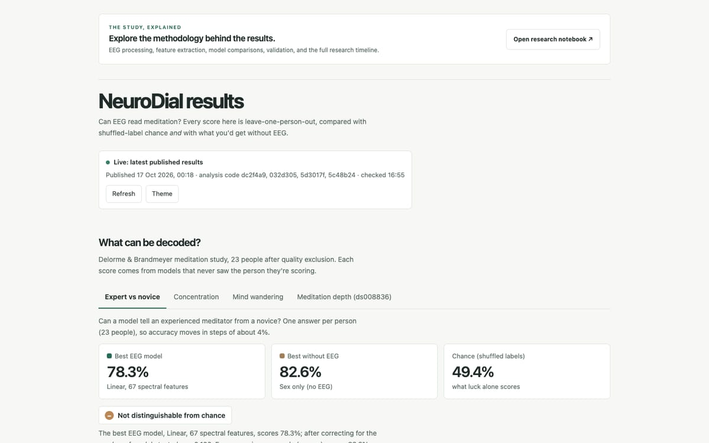
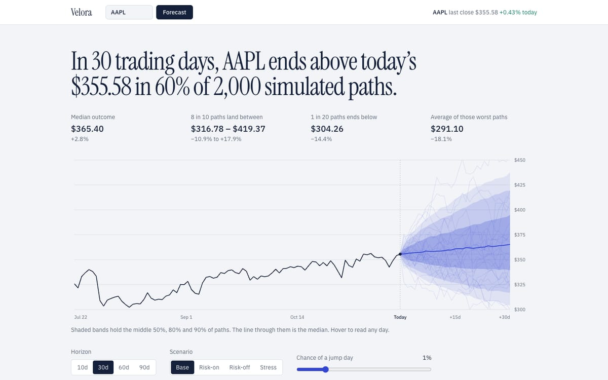

HOLD TO X-RAY
HOLD TO X-RAYClause Risk Review
Does legal pretraining help find risky contract clauses? BERT hit 0.879 document F1 on 76 held-out contracts. Legal-BERT gave no measurable gain, and the write-up says so.
Research with the numbers shown, and tools people install. Hold a card down to X-ray it and see what it’s made of.
HOLD TO X-RAYDoes legal pretraining help find risky contract clauses? BERT hit 0.879 document F1 on 76 held-out contracts. Legal-BERT gave no measurable gain, and the write-up says so.

HOLD TO X-RAYCan two EEG numbers track a meditator’s focus? Person-held-out models against shuffled labels and non-EEG baselines, plus a pre-registered replication. Nulls reported.
 HOLD TO X-RAY
HOLD TO X-RAYA map of your codebase for you and your AI agent: where to start, what a change breaks, which tests to run. One Go binary, v0.7.0.
 HOLD TO X-RAY
HOLD TO X-RAY53 free motion components for React, installed as source with one command. The accessibility badges are tests that fail when the code doesn’t back them.
 HOLD TO X-RAY
HOLD TO X-RAYA study room you share with friends. Start a focus block and a sun sinks for everyone; when it sets, you all take a break. v1.0 is out.

HOLD TO X-RAYProbability cones for stock prices: thousands of simulated paths with regime switching, instead of one price target.
HAVE SOMETHING IN MIND?